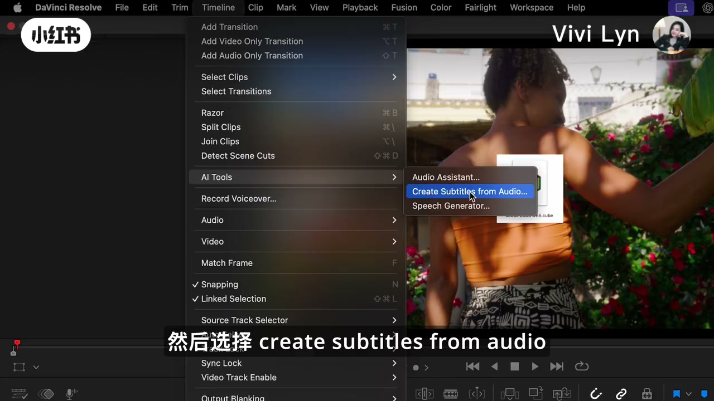
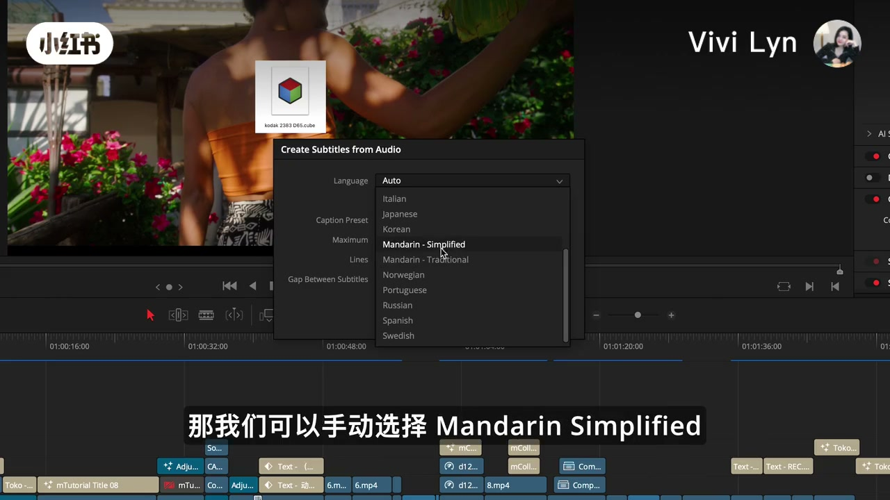
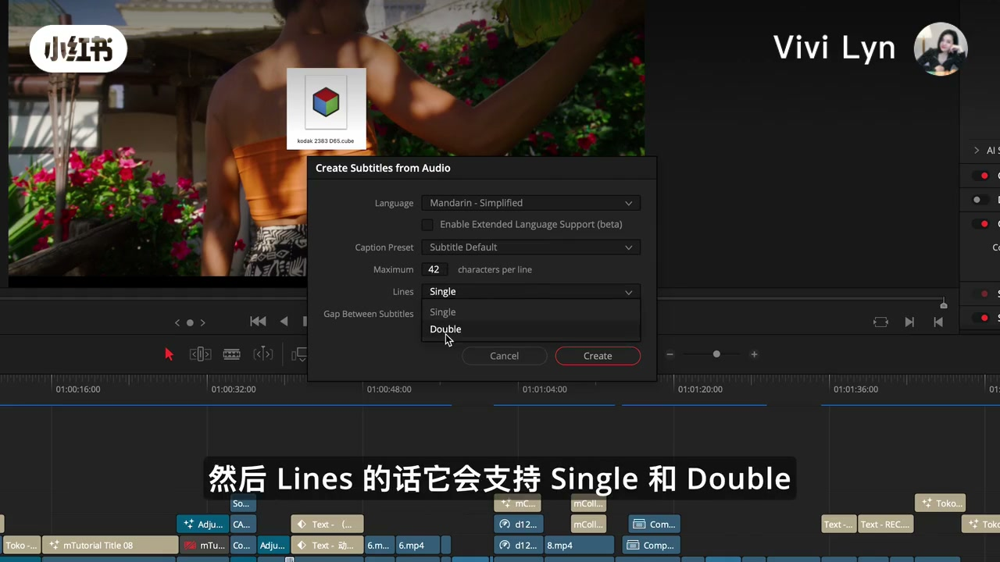
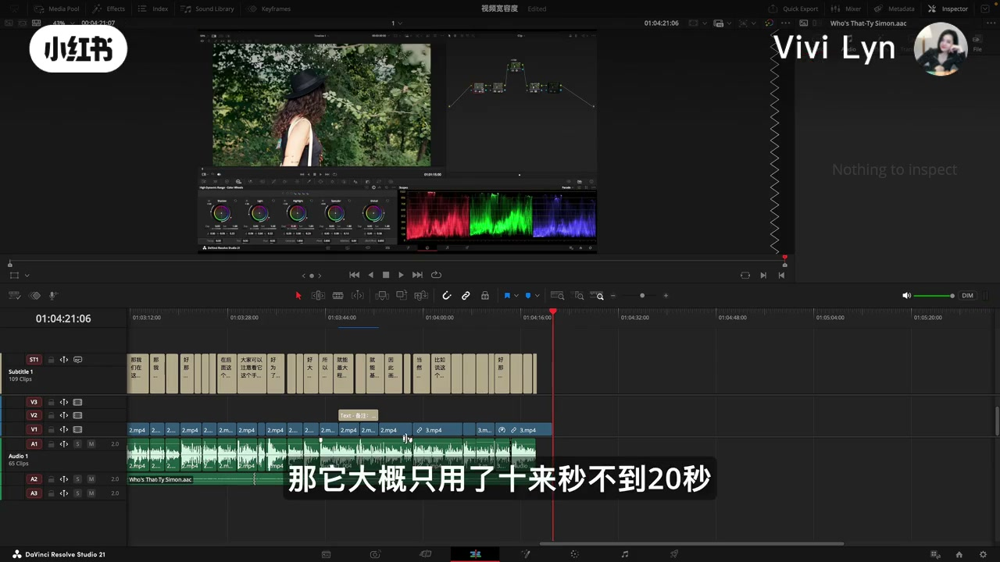
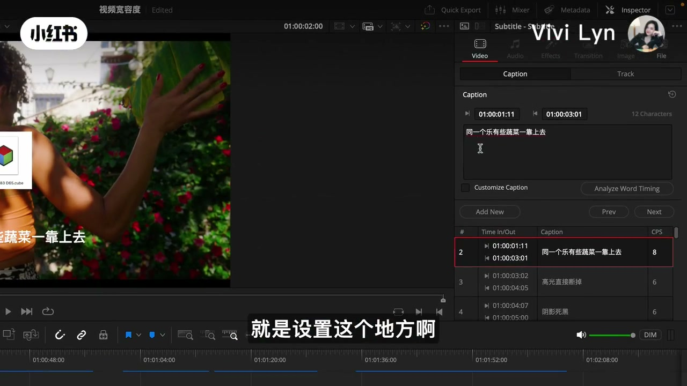
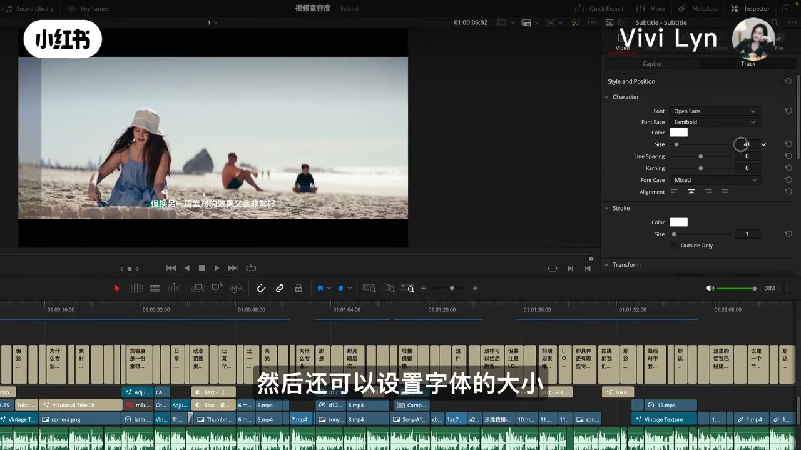

内容要点
这是一条 1 分 49 秒的操作演示。Whisper 在 00:02 到 00:30 几乎没有字，开场、点菜单、打开对话框这三段，正文按画面上的字幕复述，并逐段标明。后面口播和画面字幕大体对得上，繁体转写在文中改回简体，原句留在页末。
知识结构
画面字幕说，这么好用的功能她最近才发现，猜不少人还没留意。她要在剪辑页上，拿前两天做的一条内容片来操作。Whisper 这一段只留下标题句。
路径是 Timeline、AI Tools、Create Subtitles from Audio。语言她改选手动的 Mandarin Simplified。每行字符和单行或双行可以动，她说这次其他选项保持默认，然后点 Create。
她说样片大约 4 分 21 秒，识别只用了十来秒、不到 20 秒，准确率挺高，个别句子仍要改。改的位置在右上角 Inspector 的字幕文本里。
字体、字号、阴影和背景都在字幕轨道的 Track 里调。她把这个功能说给知识类和口播类博主。片尾提到对专业调色感兴趣，后半句画面没有读全。
自动字幕在这条片子里是剪辑页的一步：选对简体中文，生成之后用 Inspector 改单句，用 Track 管整轨样子。速度和准确率是她的判断，错句要自己看。
剪辑页上已经铺着一条做好的片子
00:00–00:14这一段 Whisper 只在 00:00 认出标题「如何用达芬奇快速给视频加字幕」，00:02 到 00:30 没有分段。下面句子来自画面字幕，不是口播转写补写。
片头画面字幕就是笔记标题：如何用达芬奇快速给视频加字幕。紧接着两句是她自己的发现：这么好用的功能，她竟然最近才发现；所以她猜，应该有不少朋友还没有留意到。然后她说，这期就带大家实际操作一下。
00:10 的画面字幕把场景说清楚：现在看到的是达芬奇的剪辑页面。00:12 补充，这是她前两天制作的一条内容视频。预览里反复出现穿橙色上衣的背影，画面上还叠着一个 LUT 文件图标，文件名是 kodak 2383 D65.cube。时间线上已经有很多短字幕块。这些是样片自己的完成状态，本教程还没有开始点「创建」。
笔记正文写着「很实用的 AI 工具，试过了，效果很不错」，并带了达芬奇调色、自媒体、调色师等话题。作者名是 Vivi Lyn。视频没有交代她的职业经历，这里不补。
时间线菜单里的 AI 工具
00:14–00:2400:14 到 00:30 仍然没有 Whisper 分段，菜单名称以画面和画面字幕为准。
画面字幕先说：现在可以点击时间线 Timeline。菜单拉开之后，她往下走到 AI Tools。00:18 的画面字幕是「然后选择 create subtitles from audio」，00:22 用中文再说一遍：也就是从音频创建字幕。00:20 这一帧上，光标就停在 Create Subtitles from Audio。同一个 AI Tools 子菜单里还能看到 Speech Generator，她没有点开，本文也不把它写成教程步骤。

对话框标题和菜单项一致，都叫 Create Subtitles from Audio。她没有比较别的字幕插件，也没有说这个功能从哪个版本开始有。01:04 那一帧的左下角读作 DaVinci Resolve Studio 21，只说明她当时打开的软件名，不能当成所有版本都长这样的证据。
语言改成简体，行数可选单行或双行
00:24–00:54从这里开始，口播和画面字幕重新对上。Whisper 把语言列表听成了英文碎片：Mandarin Simplified、Traditional，中间还有一个 Massivement。画面字幕和对话框对得更清楚。她先让观众看 Language 这一栏，下拉之后说，其实已经支持蛮多不同的语言。然后她说，可以手动选择 Mandarin Simplified，也就是简体中文和繁体中文。00:32 这一帧里，列表展开，光标停在 Mandarin - Simplified，旁边就是 Mandarin - Traditional。

Whisper 的 Massivement 在画面上对不上任何语言名。同一时刻的画面字幕在讲「Maximum 这个地方」，对话框字段是 Maximum characters per line。她说，如果想让字幕长度稍长一点，可以把这个数值改大一点；她这一次是选择默认。00:48 帧上这个数字显示为 42。42 是画面读数，口播没有报这个数，也没有演示改大之后字幕会变成什么样。
下一栏是 Lines。口播和画面字幕都说，它支持 Single 和 Double，也就是单行和双行。00:48 帧的下拉同时列出这两项，光标停在 Double。她没有说知识口播必须用双行，只是把选项指给观众看。同一帧上，Caption Preset 显示 Subtitle Default，Enable Extended Language Support (beta) 没有勾选。她的原话是：其他选项我就是默认了。这些勾选状态因此只记成「她没改」，不写成推荐配置。

设置完之后点击 Create。达芬奇会自动创建字幕。
这句口播是繁体转写，意思就是点 Create，然后软件自己生成字幕。画面字幕说的是同一件事：设置完之后点击 Create，这时候达芬奇就会开始自动地创建字幕。片头 00:01 附近曾经闪过一次正在分析的进度框，那是开场画面，和这里按下 Create 不是同一次操作的连续镜头。
她用 4 分多钟的样片说明生成很快
00:54–01:08点完 Create 之后，她看的是样片，不是这条 1 分 49 秒的教程本身。画面字幕说：我看了一下，像我这条视频时长有 4 分 21 秒左右；它大概只用了十来秒，不到 20 秒。口播的对应句是「视频时长有 4 分 21 秒，大概只用了 10 到 20 秒」。工程时间码从 01:00:00 起算，01:04 这一帧播放头在 01:04:16，和「四分多钟」对得上，但画面上没有秒表证明「十来秒」。速度是作者的说法。

这一帧已经切到调色页。字幕轨标签写着 Subtitle 1 (109 Clips)，轨上挤满短字幕。109 是标签读数。预览是戴帽子的人在绿植里，右边是节点和示波器，和本教程的字幕步骤无关，只说明她拿来演示的那条片子本身在讲宽容度、LUT 一类内容。工程名在后面一帧读作「视频宽容度」。
准确率同样是她的判断。画面字幕说「这个识别的准确率还是挺高的」，口播是「识别准确率很高」。她马上补了一句限制：还是会有个别地方需要手动修改。没有百分比，也没有拿另一条片子做对照。
错句改在右上角的 Inspector
01:08–01:20她说修改很简单，来到右上角的 Inspect。画面字幕把这个词写成 inspector，面板打开的就是 Inspector 里的 Caption。Whisper 的 Inspect 按画面改成 Inspector。画面大字幕说「就是设置这个地方啊」，另一条画面字幕说可以手动地去修改。

她举的例子就停在列表里，没有改完。01:00:01:11 到 01:00:03:01 这一条，文本是「同一个乐有些蔬菜一靠上去」。下一句是「高光直接断掉」，再下一句是「阴影死黑」。后两句和样片讲高光、阴影的内容是通的，第一句明显不像一句完整的话。作者只说「比如这一句」「可以手动修改」，没有念出她认为正确的写法。本文不替她补一句「应该是什么」。
同一面板上还有 Analyze Word Timing、Add New、上一条和下一条。口播和能读清的画面字幕都没有解释这些按钮，所以它们只算看见了，不算教过。
整轨的字体、字号、阴影和背景在 Track
01:20–01:49改完单句，她说另外来到 Track，选择字体，还可以设置字体的大小。往下拉，还可以给字体加阴影、加背景。Whisper 最后一句是「这些参数都可以在 Check 去详细设置」。画面字幕是「这些参数的话，我们都可以在 Track 这个地方去详细地设置」。Check 在画面上没有对应按钮，按 Track 理解。

01:26 这一帧的 Track 样式能读到：字体 Open Sans，字重 Semibold，颜色白色，字号 41，行距和字距都是 0，对齐居中，描边白色、粗细 1，Outside Only 已勾上。预览里样片自己的字幕是「但换另一段素材的效果又会非常好」。她没有说必须用 Open Sans 或 41 号字，这些是当前轨道的读数。阴影和背景她只说可以加，这一帧没有展开那两栏的具体数值。
收尾的画面字幕把使用对象说得很窄：这个功能真的可以帮助自媒体人，特别是知识类和口播类的博主。然后是「如果你对专业调色感兴趣」，再往后只读到「我是 Vivi」。关注、合集或下一期讲什么，画面没有给全，笔记话题里虽然有调色，本片也没有演示调色步骤。
本地笔记说明里她写「试过了，效果很不错」。和片中的话放在一起，她肯定的是生成速度和大体准确，同时保留了「个别地方要手改」。手改的界面在 Inspector，样子在 Track，这两处不要混用：前者改某一条的文字和时间，后者改整条字幕轨的字体和装饰。